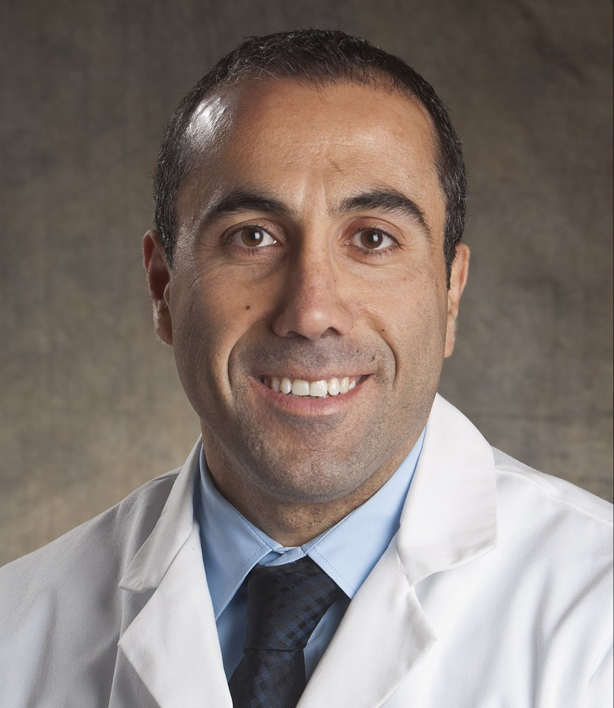

Learn More
Board-Certified Sleep Medicine & Allergy/Immunology Physician serving Oakland and Macomb Counties, Michigan

Background & Training
Dr. Michel Alkhalil's path into medicine reflects an uncommon drive to go deeper where others stop. After earning his medical degree, he completed his residency training at St. Joseph Mercy Oakland Hospital — a rigorous foundation in internal medicine that prepared him for the complex, multi-system cases he would come to specialize in.
From there, Alkhalil pursued fellowship training in Pediatric and Adult Sleep Medicine at Drexel University College of Medicine, Hahnemann University Hospital, and St. Christopher's Hospital for Children. Rather than stopping there, he went on to complete a second fellowship in Allergy & Immunology at the University of South Florida, Tampa. That consecutive, dual-specialty training is rare — and it shapes the integrated, whole-patient approach he brings to every consultation at AAIRS Clinic.
Board Certifications
Dr. Alkhalil holds board certifications in both Sleep Medicine and Allergy & Immunology — a pairing that gives him a clinically significant advantage when patients present with overlapping symptoms. Allergic rhinitis, for instance, is a well-documented contributor to obstructive sleep apnea. Asthma exacerbates nocturnal breathing difficulties. Immunological dysfunction can manifest in fatigue and impaired sleep architecture.
Being board-certified in both fields means Alkhalil doesn't have to refer patients between silos. He can evaluate, diagnose, and treat the full clinical picture — something that matters enormously when symptoms resist explanation by any single specialty in isolation. Patients in Oakland and Macomb Counties benefit directly from that breadth. You can review his physician profile on U.S. News Health for further credential details.
AAIRS Clinic & Troy Sleep Center
As Medical Director of AAIRS Clinic (Allergy, Asthma, Immunology, Respiratory & Sleep) and the Troy Sleep Center, Dr. Michel Alkhalil oversees one of the few practices in the region that combines accredited sleep medicine with comprehensive allergy and pulmonology care under one roof. The sleep center carries AASM accreditation — the gold standard in sleep medicine — reflecting the facility's commitment to diagnostic accuracy and treatment quality.
The clinic serves patients across Oakland and Macomb Counties, two of Michigan's most densely populated healthcare markets. Its multi-specialty structure means patients with complex or comorbid conditions — such as those managing both asthma and sleep apnea — can receive coordinated care from a single, highly qualified team. Read more about the conditions treated at the practice and what the diagnostic process looks like.
Recognition & Awards
Dr. Alkhalil has been recognized multiple times on the Hour Detroit Top Docs list, a peer-nominated distinction that identifies the physicians other physicians trust most. Inclusion is based on nominations from fellow practitioners — making it one of the more meaningful indicators of clinical standing in the Detroit metro area.
He is also listed on Corewell Health's provider directory and maintains an active presence on patient review platforms including Zocdoc, where patients can read reviews and schedule directly. These recognitions reflect the consistent, community-focused care that has defined Alkhalil's practice in Michigan.
Patient Care Philosophy
What distinguishes Dr. Michel Alkhalil's approach isn't just the depth of his training — it's the intent behind it. Sleep disorders, allergic disease, and respiratory conditions are often part of the same physiological story. Treating them in isolation leaves patients with partial answers. Alkhalil built his practice around the conviction that integrated diagnosis and treatment produces better outcomes.
Whether a patient comes in struggling with chronic insomnia, seasonal allergies that won't respond to standard medications, suspected obstructive sleep apnea, or an immune condition affecting quality of life, the team at AAIRS Clinic is equipped to investigate fully and treat holistically. Explore the allergy and immunology services available to Michigan patients, or learn about modern sleep apnea treatment options including alternatives to CPAP.